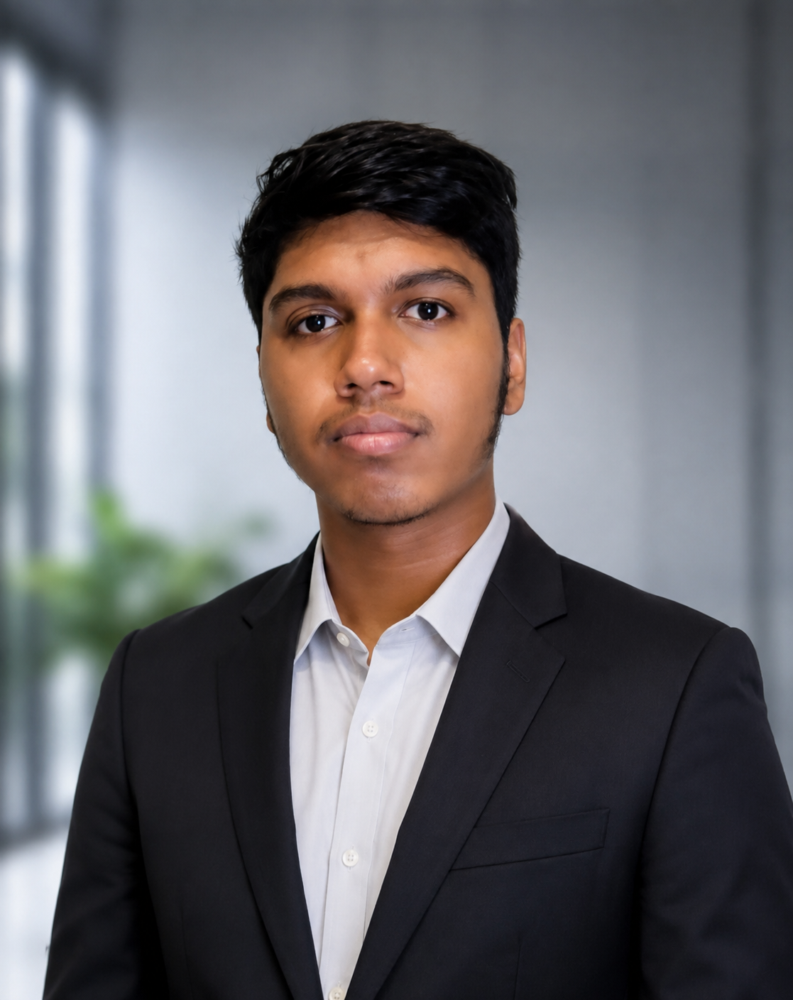
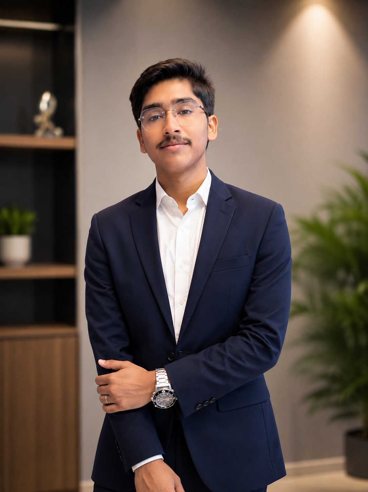
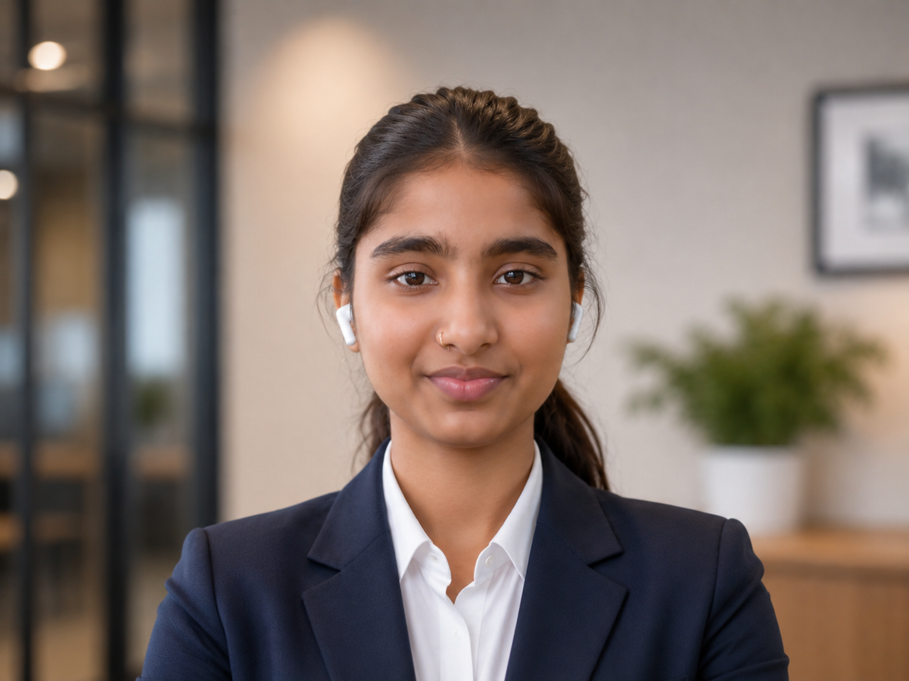
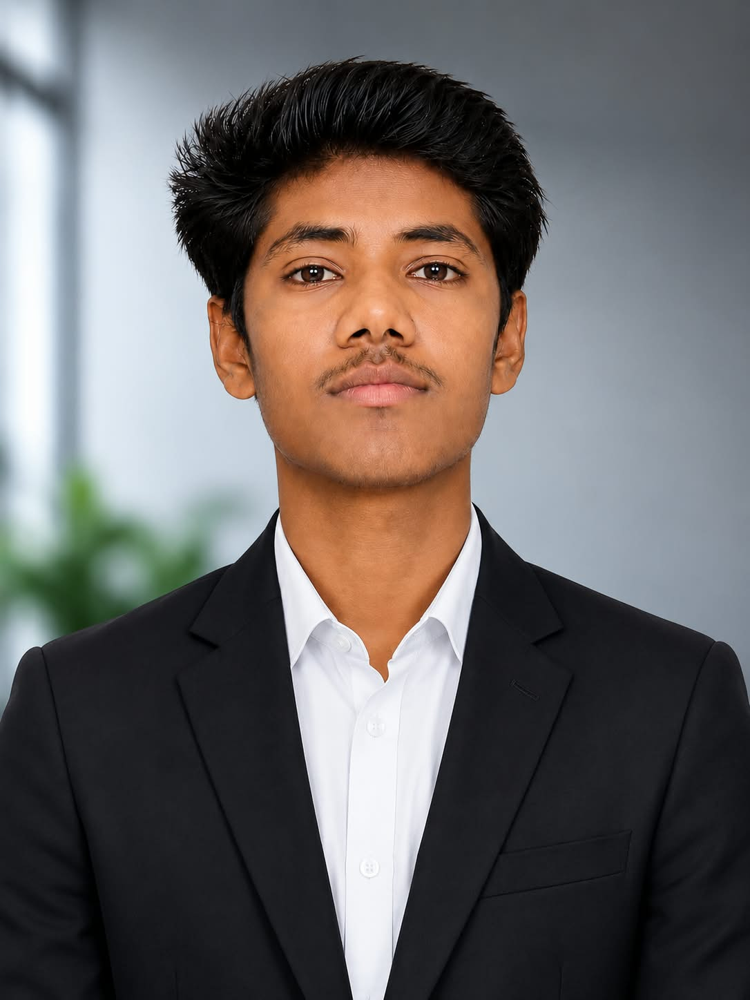
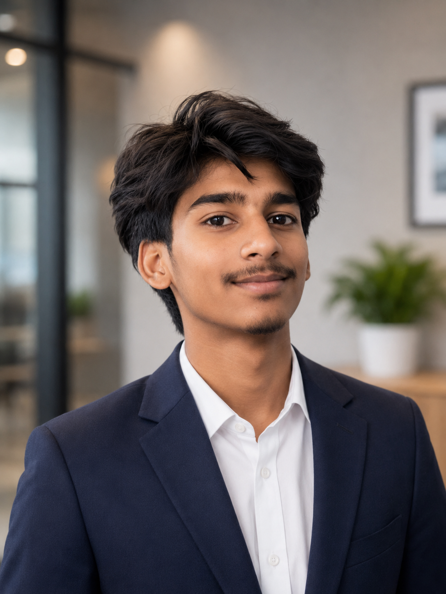

01 / COMMAND
Aditya
Team Leader & Systems Architect
Overall project ideation, system architecture, planning, team coordination, and integration of all team members' work.
We are a small field team building one dependable UAV system for the ordinary missions and the difficult ones: moving what matters, finding who needs help, and learning from every flight.

Overall project ideation, system architecture, planning, team coordination, and integration of all team members' work.

Software development, website development, digital systems, and technical documentation.

Project presentations, pitching, explaining technical concepts, and team communication.

Flight testing, field evaluation, data collection, performance analysis, identifying improvements, and structural repair after testing.

Structural design, component and material selection, weight management, balancing, and future structural development.